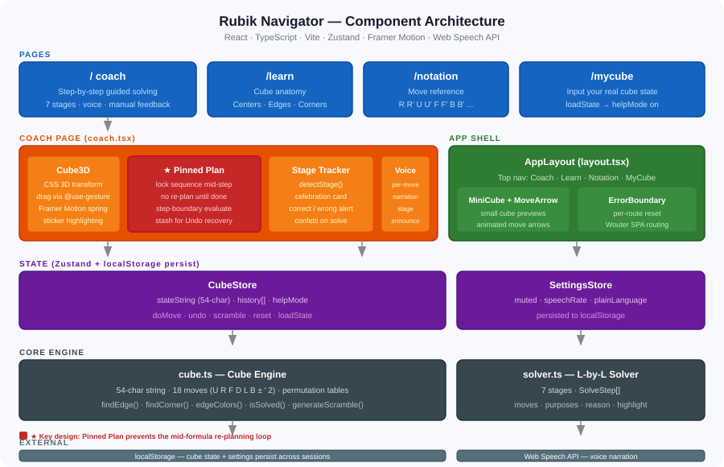

What It Does
A step-by-step Rubik's Cube coach that runs entirely in the browser. Scramble a cube, turn on the coach, and it walks you through solving it — one move at a time, with a spoken explanation of why each move exists.
The Story
The cube sat on a shelf for thirty years as a "I'll figure it out someday" item. Then my son started learning — coached to memorize R U R' U' until his fingers knew the pattern, with no idea why those four moves worked. My mom picks it up and just tries things — no formula, no patience for memorization.
I couldn't find an app that worked for both of them. So I built one on Replit in a weekend. GenAcademy got me thinking about the difference between knowing how to do something and understanding why it works. Both are valid. The point is knowing which one you're doing.
Learning Modes
- Coach shows exact move sequence
- Each move labeled with its purpose
- Auto-play executes the full step
- Progress checkmarks per move
- Scramble and try anything
- Right move? Coach confirms it
- Wrong move? Alert + undo option
- Hint available anytime
- Coach off by default
- Turn it on when stuck
- Undo always recovers the plan
- Voice coaching optional
| Approach | You get | Trade-off |
|---|---|---|
| Memorize formulas | Fast, repeatable execution | No intuition — a small variation breaks the routine |
| Free exploration | Real intuition and understanding | Slow to reach a full solve without structure |
| Coached with reasons | Structure + understanding together | Slower than pure memorization |
The Four Pages
Single-page React app with four routes. Entirely client-side — no server.
Guided Solving
3D drag-rotatable cube · stage progress bar · move sequence with per-move labels · voice controls · manual move buttons · scramble / reset / undo.
How the Cube Works
Visual explainer of cube anatomy — 6 centers (never move), 12 edges, 8 corners. Color scheme used throughout the app.
Move Reference
What R, R', U, U', F, F'… actually mean, with interactive diagrams so you see the move before executing it.
Enter Your Cube
Input your physical cube's colors face by face. The app loads that state and starts coaching from there.
How to Use It
-
1
Scramble or enter your cube
Hit Scramble for 22 random moves, or use /mycube to enter your real cube's colors.
-
2
Turn coach mode on (optional)
Off by default — explore freely. When you want guidance, toggle Coach Mode to see the next step.
-
3
Play or turn manually
Auto-play executes the step, or use the move buttons yourself. Right move = confirmed. Wrong move = corrected with an undo option.
-
4
Read the "why" — or hear it
Each step shows a plain-language explanation of what the sequence accomplishes. Voice reads it aloud if enabled.
-
5
Repeat through 7 stages
Each stage completes with a celebration card naming what you just finished and what comes next.
Tech Stack — Framework, Packages & Why
Replit scaffolded a React + Vite + TypeScript workspace. Here's what it chose and the reason each package earned its place.
| Package | Why it was chosen |
|---|---|
| reactcatalog (18) | Component model maps directly to the app's structure — cube faces, stage panels, coaching steps, and the 3D canvas are all naturally independent components that re-render only when their slice of state changes. |
| typescript5 | The cube state is a 54-character string with strict index semantics. TypeScript catches off-by-one errors in permutation tables at compile time rather than at runtime when the cube silently returns wrong colors. |
| vitecatalog (5) | Fast hot-module reload inside Replit. The cube engine is pure browser code — no SSR needed. Vite bundles everything into a static site that runs directly on Replit's hosting with zero server config. |
| tailwindcsscatalog (3) | Replit's default template ships with Tailwind. Utility classes keep layout and spacing changes local to the component — no stylesheet hunting. The @tailwindcss/vite plugin integrates with zero config. |
| Package | Why it was chosen |
|---|---|
| zustandv5.0 | 4 KB vs Redux's ~50 KB. The cube only has two stores (CubeStore and SettingsStore). Zustand's persist middleware writes both to localStorage automatically — that's 3 lines of code vs a custom serializer in Redux. No Provider wrapping needed. |
| wouterv3.3 | ~2 KB vs React Router's ~50 KB for 4 static routes. The app has four pages (/, /learn, /notation, /mycube) that never need dynamic segments, loaders, or nested layouts. Wouter handles this with a single <Switch> and no configuration. |
| @tanstack/react-querycatalog (5) | Part of Replit's workspace template. The app wraps everything in a QueryClientProvider — future API calls (e.g. saving solve history) would use React Query's caching automatically. Currently no server calls are made. |
| Package | Why it was chosen |
|---|---|
| framer-motioncatalog (11) | Spring physics for the 3D cube drag. A CSS transition would snap between angles. Framer Motion's useSpring gives the cube real inertia — release mid-drag and it settles naturally. Also used for the solving celebration animation. |
| @use-gesture/reactv10.3 | Unified mouse + touch drag events. This package normalises pointer events across desktop (mouse), tablet (pen), and mobile (touch) into a single useDrag hook. It pairs with Framer Motion springs — delta XY from gestures feeds directly into rotateX/rotateY springs. |
| @radix-ui/*v1–v2 | Accessible headless components via shadcn/ui pattern. Dialog, Tooltip, Tabs, AlertDialog, etc. ship with correct ARIA roles and keyboard navigation. Replit's Shadcn template generated all the src/components/ui/ files from these primitives — the team owns the styles, Radix owns the behaviour. |
| lucide-reactcatalog | Tree-shaken React icon components. Play, SkipForward, Award, Lightbulb, Undo2 are imported individually — only the used icons go into the bundle. Consistent 24px stroke style across all UI controls. |
| canvas-confettiv1.9 | One function call for the stage-complete celebration. Writing a confetti canvas animation from scratch is ~200 lines. confetti({ particleCount: 120 }) produces the celebration burst. The library is 24 KB and tree-shaken, so no performance impact when not firing. |
| Web Speech APInative | No npm package — built into every modern browser. window.speechSynthesis.speak() reads move labels and stage announcements aloud. Choosing a browser native API means zero bundle size increase and works offline. |
| clsx + tailwind-mergecatalog | Safe conditional class merging. clsx joins class strings conditionally. tailwind-merge de-duplicates conflicting Tailwind utilities (e.g. bg-red-500 overriding bg-blue-500). Together they power the cn() utility used throughout all shadcn components. |
| Package | What it does in Replit |
|---|---|
| @replit/vite-plugin-cartographer | Maps compiled output back to source files so Replit's AI agent can pinpoint exactly which line of source code a runtime error came from — even after Vite bundles everything. |
| @replit/vite-plugin-runtime-error-modal | Shows a browser overlay when a runtime error crashes the app. Instead of a blank screen, you see the stack trace inline — the agent reads this to diagnose errors without needing browser devtools access. |
| @replit/vite-plugin-dev-banner | Injects the Replit dev banner (the preview bar at the top of the editor view) so you can share the live preview URL with a single click during development. |
| .agents/memory/Replit agent memory | Persists key learnings between agent sessions. After fixing the loop bug, the agent wrote coach-step-pinning.md — "never re-plan mid-step." Later sessions read this file so they don't re-introduce the same bug when adding new features. |
Architecture
Five layers. User interaction flows down from pages through components into state, which feeds the cube engine and solver. Everything persists to the browser.

The cube state is a 54-character string
The entire cube lives in one variable. A solved cube is "YYYYYYYYY OOOOOOOOO GGGGGGGGG WWWWWWWWW RRRRRRRRR BBBBBBBBB" (faces U R F D L B, 9 stickers each). Every move is a permutation table over indices 0–53 — precomputed at startup, applied as an array lookup.
The solver uses beginner layer-by-layer
Seven stages, each a function that calls helpers (findEdge(), findCorner(), uTurnsFromTo()) to locate pieces and compute the path. Output is a SolveStep with moves[], purposes[] (one explanation per move), reason (why this works), and highlight[] (facelet indices to dim on the 3D cube).
State in two Zustand stores
CubeStore — cube string, history stack for undo, helpMode flag. SettingsStore — voice mute, rate, plainLanguage. Both persist to localStorage via Zustand's persist middleware — refresh the page and you're exactly where you left off.
The Loop Bug — 5 Iterations
The hardest part wasn't the solver. It was making the coach coherent — feeling like it was following a plan, not reacting to every individual move.
planRef). Once a step starts, that exact sequence is locked into a useRef. The solver isn't called again until the step finishes or the user makes an unexpected change.
useRef mirror. All click handlers read from planRef.current — always the live value, never one render behind. Auto-play timer also reads from the ref and cancels immediately on unexpected state change.
applyMove(fromState, expected) === stateString. Correct manual move advances the sequence. Wrong move shows alert + sets aside plan so Undo can resume it. stashRef holds the plan across the wrong move.
font-size em units. Pass a smaller size prop on desktop. Stage goal added to top bar. Celebration card names what finished + what's next.
if (planRef.current !== null) return. Stage detection skips entirely while a step is in progress. Fires exactly once per stage, at the step boundary.
Build Log — What I Learned
A coach needs a memory, not just a plan
A solver that re-plans from raw state on every render is technically correct but practically unusable. The coaching sequence must be owned by the session, not recomputed from scratch.
UI state and app state are different clocks
React renders asynchronously. For anything time-sensitive, read from a useRef that's updated synchronously — never from render props inside an event handler.
Manual moves are a feature, not an edge case
Detecting whether a manual move matched the expected move turned "going off-script" into a teaching moment. Undo recovering the plan (via stashRef) made it safe to try things.
Visual layout needs screenshot verification
The cube size bug (container shrunk, cube didn't) was only visible by looking at the rendered page. CSS and component props don't always express the same thing — check with screenshots.
Replit's agent memory prevents re-breaking fixed bugs
After fixing the loop bug, the agent saved the principle ("only judge at step boundaries") to .agents/memory/coach-step-pinning.md. Later sessions read this file before making changes. The stage-complete fix in iteration 5 directly referenced that note — the agent didn't re-derive the rule, it already knew it.
Try It
Rubik Navigator
No install, no account. Works on mobile and desktop. Cube state saves across sessions.
Replit provided the credits and AI-assisted environment that made this a weekend build. GenAcademy got me thinking about the difference between executing a formula and understanding why it works. The cube has been on a shelf long enough.